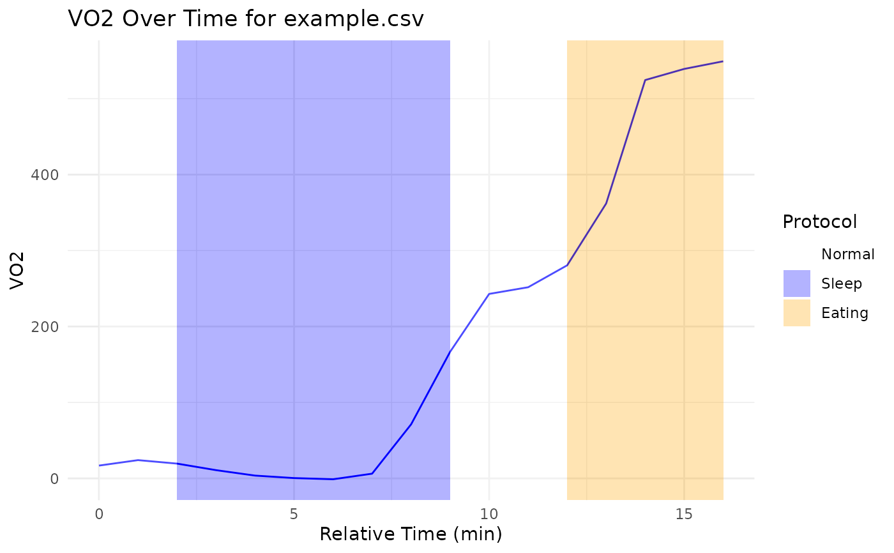

Visualizes time-series data from a WRIC CSV file, highlighting protocol changes and optionally saving the plot.
Source:R/visualizations.R
visualize_with_protocol.RdVisualizes time-series data from a WRIC CSV file, highlighting protocol changes and optionally saving the plot.
Usage
visualize_with_protocol(
csv_file,
plot = "RER",
protocol_colors_labels = NULL,
save_png = FALSE,
path_to_save = NULL
)Arguments
- csv_file
Path to the CSV file containing time-series data.
- plot
A string specifying the column to plot. Defaults to "RER". This can be any valid column name in the CSV file.
- protocol_colors_labels
A data frame containing the protocol codes, colors, and labels. If
NULL, defaults to a predefined set of protocols.- save_png
Logical, whether to save the plot as a PNG file. Defaults to
FALSE.- path_to_save
Directory path for saving the PNG file. If
NULL, saves in the current working directory.
Value
A ggplot2 object visualizing the specified data with protocol highlights. Optionally saves the plot to a file if save_png is TRUE.
Examples
csv <- system.file("extdata", "example.csv", package = "wrictools")
visualize_with_protocol(csv, plot = "VO2")
